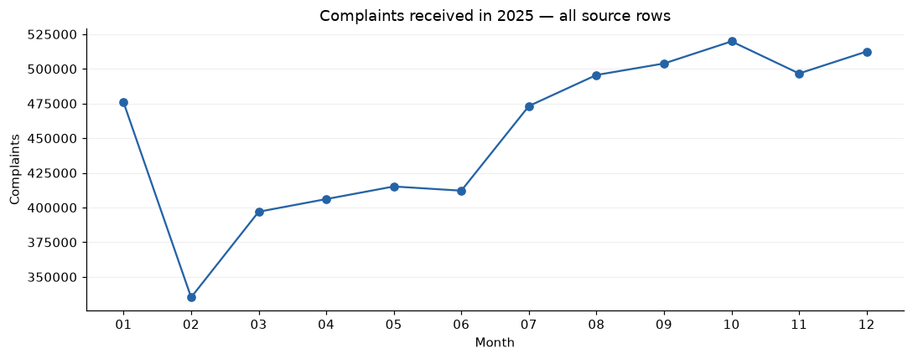
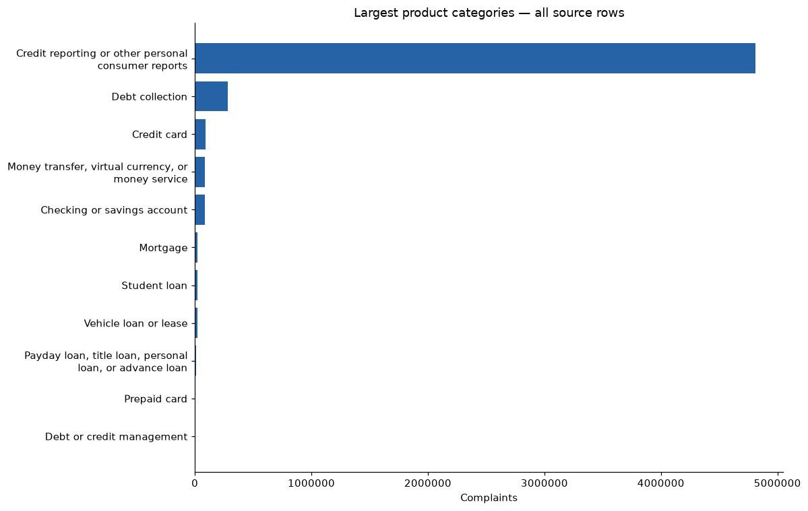
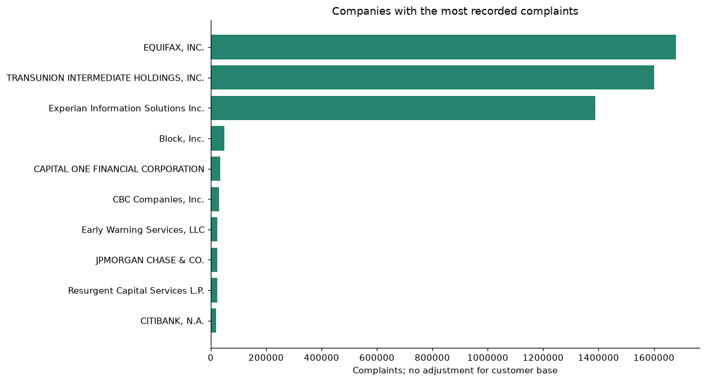

Repeated wording stays out of evaluation.
Every pair in the original 30,000-row sample was checked using word and word-pair TF-IDF cosine similarity. The cutoff is strictly above 0.9.
Rows were removed before rebuilding the splits. A second exhaustive pass checked the retained rows using the same frozen audit vectors.
This is a lexical similarity check on the sample, not proof that all semantic paraphrases are gone. Audit vectors are never reused to train a model.
Every test class has enough examples.
| Product class | Train | Validation | Test | Train weight |
|---|
Weights use training labels only: training rows ÷ (number of classes × rows in that class). Old splits are shown for comparison and are retired for future training.
Can a model beat “always pick the largest class”?
The majority benchmark learns the most common label from training data and predicts it for every complaint. It does not read the complaint text.
Macro-F1 is the primary metric. Accuracy is secondary. Supervised training uses balanced weights; the majority control deliberately keeps the original frequencies.
| Split | Macro-F1 | Accuracy |
|---|
Business counts and model counts answer different questions.



Company volume is not a failure rate. A timely response does not establish resolution. These charts include complaints without narratives and repeated text.
Read the original business-insights report